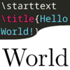
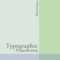
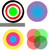
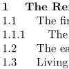
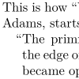
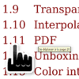
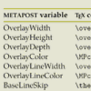
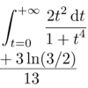
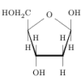
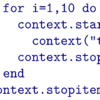

The ConTeXt community builds, explores and shares. Here you will find community, tutorials, how-to guides, references, and discussions related to ConTeXt.
-
News
- Max Chernoff has created a static backup mirror of this wiki at www.maxchernoff.ca/tools/context-wiki/ as well as tug.org/context-wiki/ . These mirrors will be updated daily. You can make your own mirror by cloning github.com/gucci-on-fleek/context-wiki-mirror ; e.g. Hraban’s at wiki.mtxrun.eu .
- The 20th ConTeXt meeting will take place at Maibacher Schweiz, Butzbach-Maibach, Germany on August 24th–29th, 2026.
- You’re invited to our regular online meet-up , second Wednesday of each month, 19:30 CET/CEST (UTC+1/2). (Q&A with the developers, chat about current projects…)
-
The Wiki’s ConTeXt is on version
ConTeXt 2025.02.19 14:35 LMTXnow. This is just the ConTeXt installation itself, the command definitions and source code search index are still for the previous installed version2024.01.08. - The 19th ConTeXt meeting took place at the holiday site KREFTA in Chmielno (near Gdańsk), Poland, on August 23th–29th, 2025.
- The extensive manual Mathematics in ConTeXt screen and paper is included in the distribution since 2024-07.
-
Community and web resources
- Try ConTeXt online (COW, “ConTeXt on web”)
- Mailing lists
- ConTeXt news on Mastodon (incl. news about online meet-up)
- Documentation
- Wiki suggestion box
- FAQ and Dictionary
- Humour 😜 and Common errors 🤔
Introduction to ConTeXt
Mastering ConTeXt in 12 topics
-

Input and compilation -

Document layout and layers -

Color -

Document structure and headlines -
Characters words and fonts -

Text blocks -

References notes and floats -

Tables -

Graphics and media -

Mathematics -

Chemistry -

ConTeXt and Lua programming
-
- Input and compilation
- Cover the installation of ConTeXt, the structure of input files and the compilation process, but also language aspects, text edition, ConTeXt's syntax.
- Document layout and layers
- Teach how to control the overall structure and appearance of the document.
- Color
- Enhance the document’s visual appeal using color.
- Document structure and headlines
- Explain how to structure the document using sections, headlines, and divisions.
- Characters words and fonts
- Explore typographic customization for characters and words.
- References notes and floats
- Manage links, cross-references, index, registers, citations, bibliography, annotations, attachments, floats and their caption.
-
- Text blocks
-
Teach block-level formatting
- typography : like Spacing, Alignment, Indentation, Delimiters and breaks
- environments : like Lists of items, Descriptions, Enumerations, Narrower, Frames, Quotes, Columns, Typing, Verse, Text background, …
- Graphics and media
- Add and format visual elements.
- Tables
- Master table creation and styling.
- Mathematics
- Specialize in typesetting technical content.
- Chemistry
- Specialize in typesetting technical content.
- ConTeXt and Lua programming
- Explore advanced scripting and customization, modules and ConTeXt development.